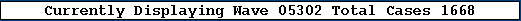
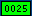
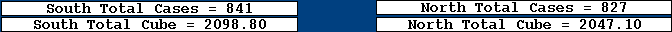

The first task of planning a wave is the selection of available palletizing stations. Click on the black box on the left side of the screen. The partner will be presented with a list of possible stations. Each station lists it's north/south side and availability. Choices for availability are: Not Available, Available, and Future. All stations that are operational and staffed should be set to available. Double click on the available column and double click on the word "Available" from the pull-down menu. When you have finished adjusting the stations you may hit escape to return to the main wave planning screen.
Once you have adjusted the stations, you should re-calculate the waves. This is accomplished by clicking on the black "Recalc Waves" button on the right side of the screen. This function distributes the store orders among the available stations in the original order that was given by the HEB host. This determines the number of waves for the day. Fortnaplus© makes an effort to assign each store to the same side as the Dock Door Number for that store. The partner can then click on any of the 20 wave boxes at the bottom of the screen to display the store assignments for that wave.
At the top of the screen, there is a long white bar showing the currently displayed wave and the total cases for the wave.

The next row of 20 boxes shows the store number , if any, assigned to each station. The store number box will be green

if it is on the correct mezzanine or red if not. Inside the station boxes, there is a box showing the quantity of cases for each station. Next are four white bars showing the total cases and cube for the North and the South palletizing mezzanines.
Next will be a long bar in the center of the screen which will be either green or red depending on the balance of cases between the two sides.
Prior to proceeding to the next step, the partner may wish to re-order the stores from the original sequence provided by the HEB host. Click on the black box on the left of the screen labeled A screen will appear allowing the partner to move stores from one wave to another. There is a separate help screen for the re-ordering function.
Re-ordering Help Screen
The next step would be to balance the mezzanines. A user defined variable, initially set to 10%, is used to decide whether or not the two sides are balanced. If the difference in case quantity between the two sides is in excess of this UDV, the center bar will display "Out of balance by nn% nnn cases."
If the balance is not acceptable, the partner may swap two stores. Simply click on the store number you wish to move. The center bar will change to say "Move store xxxxx to where?" The partner would then click on the store that needs to be swapped to opposite side. In general, a large quantity store on the heavy side should be swapped with a small quantity store on the light side. Continue this balancing act until you are satisfied with the balance.
The next step in wave planning is to select the number of partners needed to pick the wave. First, click on the black box on the left side of the screen. This will bring up a list of partners. You will see their Name, PartnerID, SRF, Suggested SRF, and their Availability. Similar to the Edit Stations function, the partner must set the Availability column to either Available or Not Available. When finished, hit escape to return to the main wave planning screen. Next, decide how many partners will be needed to pick this wave. Enter this number in the "Total Partners" edit box at the bottom left of the screen.
The currently assigned partners will be displayed in the long white box at the bottom center of the screen. The currenly assigned phantom partners will be displayed in the long white box at the bottom right of the screen.
The final step in wave planning is to click on the center bar which says "Click to Accept".
You must be currently displaying the lowest numbered wave which has not been released. The wave that is accepted will be further processed into pick assignments for the partners. The currently displayed wave will move to the next higher wave number and the accepted wave will have it's wave box turn to grey. The currently displayed wave displays it's wave box in yellow if has not been released.
For further clarification of the wave planning process, please refer to the Fortna FSD section 7.
Copyright © 2001 Fortna Inc. All rights reserved.